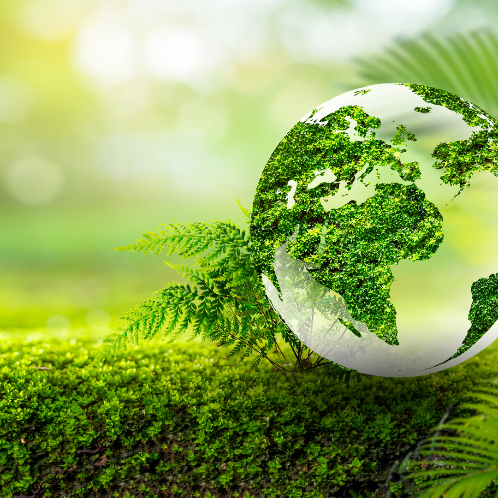

Notre mission
🌱 Comprendre l'agriculture durable
- ✅ Préservation des ressources naturelles
- ✅ Réduction des impacts environnementaux
- ✅ Amélioration de la résilience climatique
- ✅ Renforcement de l'économie locale
🌍 Pourquoi l'agroforesterie ?
- 🌿 Enrichir les sols naturellement
- 🐝 Favoriser la biodiversité
- ☀️ Lutter contre l'érosion et le changement climatique
- 💧 Optimiser l'utilisation de l'eau
🚀 Innovations pour une agroforesterie efficace en Guinée
- 🔹 Utilisation de drones et capteurs pour surveiller les cultures
- 🔹 Systèmes d'irrigation intelligents
- 🔹 Formation des agriculteurs à l'agroécologie et à la permaculture
- 🔹 Création de pépinières communautaires
💡 Impact attendu sur la Guinée
- 📈 Augmentation des rendements agricoles
- 🌳 Reforestation massive et protection contre la désertification
- 👨🌾 Renforcement des compétences des agriculteurs
- ♻️ Meilleure gestion des déchets agricoles
🌱 Objectifs de l'initiative
- 🌿 Promouvoir l'agroforesterie durable
- 🚜 Sensibiliser les agriculteurs aux pratiques écologiques
- 💧 Préserver les ressources en eau et la biodiversité
- 🌍 Lutter contre la déforestation et l'érosion des sols
- 🍀 Encourager l'autonomie alimentaire et l'agriculture bio
- 📚 Former les nouvelles générations aux enjeux climatiques
- 🤝 Créer un réseau de solidarité entre agriculteurs et chercheurs
Équipe et partenaires
Nom du membre
Rôle
Nom du membre
Rôle
Nom du membre
Rôle